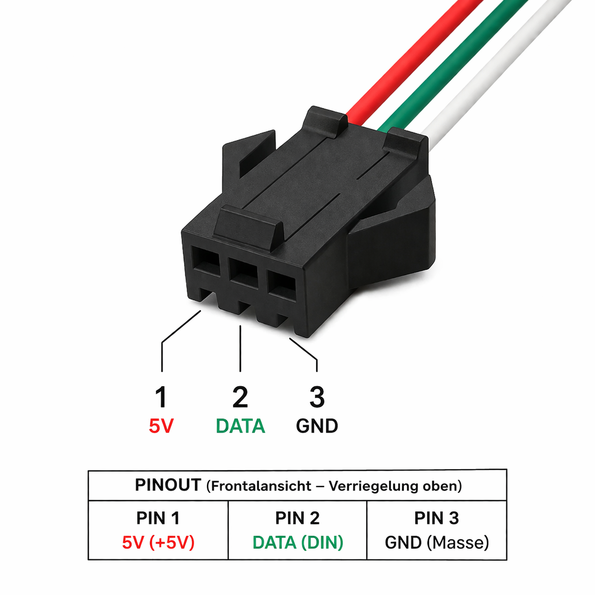
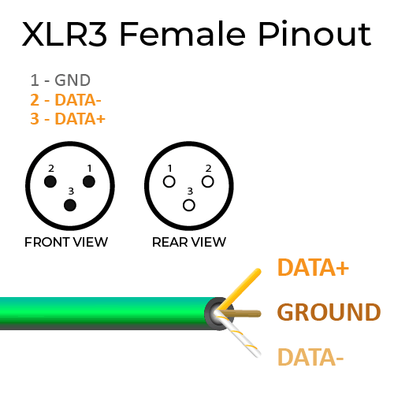

licht.team
make the magic happen
StrobePad
compact wireless strobe control, built for direct live use
StrobePad is a compact handheld wireless strobe controller for direct control of a Stairville Power Strobe 1500 DMX via a compatible wireless DMX receiver. It is designed for fast setup, simple operation, and reliable performance in live and setup environments.
key features
- dedicated control of flash speed and power
- fire operation with momentary and toggle modes
- guarded fire mode switching for safer operation
- manual standby with deep sleep and wake on Fire button
- auto standby with deep sleep after 15 min without button input
- output state and mode visibility via RGB fire indicator
- integrated display for active settings and device status
- local on-device configuration
- guided battery calibration from the hidden status menu
- rechargeable battery operation with USB-C charging
- user-replaceable 18650 battery
designed for practical field use
StrobePad gives users immediate hands-on control without complex menus or external setup tools. Important operating parameters stay visible during use, which supports quick deployment, fast troubleshooting, and focused single-task control. Early prototype feedback consistently highlighted the 1980s-inspired aesthetic as a distinctive strength of StrobePad.
typical applications
- live strobe triggering
- portable effects control
- fixture setup and testing
- compact lighting control tasks
at a glance
- 2 dedicated rotary controls
- 1 fire button with mode-aware output behavior
- wireless DMX transmission
- RGB fire indicator for mode and output state
- integrated display
- local configuration for DMX address, wireless ID, 2.4 GHz wireless channel, and wireless power level
compatibility
StrobePad is designed for use with a Stairville Power Strobe 1500 DMX and a compatible wireless DMX receiver.
notice
Specifications and features may change without prior notice.
press release
licht.team introduces StrobePad, a compact wireless strobe controller for fast and focused live operation
licht.team announces StrobePad, a compact handheld wireless strobe controller designed for direct control of a Stairville Power Strobe 1500 DMX via a compatible wireless DMX receiver.
StrobePad is built for simple, immediate operation in live and setup environments. The device features two dedicated rotary controls for flash speed and power, a Fire button with momentary and toggle operating modes, and an integrated display for active settings and device status. Current behavior includes guarded mode switching to reduce accidental changes during operation and manual standby via long press Fire button.
Designed for portable operation, StrobePad offers local on-device configuration for DMX address, wireless ID, 2.4 GHz wireless channel, and wireless power level, with settings retained after a power cycle. A dedicated RGB fire indicator is used to communicate mode, output state, and rejected mode-switch actions at a glance.
With its compact format, focused feature set, and low-latency wireless operation, StrobePad is aimed at users who need a practical and reliable dedicated controller for strobe triggering, effects control, and fixture setup.
about licht.team
licht.team develops practical lighting tools and control solutions with a focus on direct usability, compact form factors, and field-oriented design.
StrobePad
user guide
introduction
Thank you for choosing StrobePad.
StrobePad is a compact handheld wireless strobe controller for direct control of a Stairville Power Strobe 1500 DMX via a compatible wireless DMX receiver. It is designed for fast setup, direct operation, and predictable live use.
package contents
- StrobePad unit
- USB-C charging cable
- Quick user guide
device overview
StrobePad provides the following controls and indicators:
- rotary control 1: flash speed
- rotary control 2: flash power
- fire button: output control in momentary or toggle mode
- RGB fire indicator: mode, output state, and reject feedback
- integrated display: shows active settings and device status
- buttons next to the display: used for configuration and calibration functions
- USB-C port: charging and service power
- battery compartment: user-replaceable 18650 battery
power and charging
- StrobePad is powered by a rechargeable 18650 battery
- charge the device via the USB-C port
- use only suitable 1-cell Li-ion batteries
- do not use damaged batteries
- fully charge the battery before first use
- startup includes a low-battery safety check before normal operation
- if battery voltage is too low at startup, the device enters deep sleep instead of normal operation
quick start
- Power on the device.
- Verify the displayed DMX start address, wireless ID, 2.4 GHz wireless channel, and wireless power level.
- Confirm that the compatible wireless DMX receiver and fixture are powered and configured correctly.
- Adjust the flash speed and power controls as required.
- In momentary mode, press and hold Fire for active output.
- In toggle mode, short press Fire to switch output on or off.
- Verify output state on the RGB fire indicator.
normal operating behavior
- startup output state: off
- two fire modes are available: momentary and toggle
- momentary mode: output active while Fire is held
- toggle mode: short press toggles output on or off
- idle behavior: output remains off while both rotary controls are at minimum
- mode switch gesture: double-click on Fire button
- mode switch is accepted only when both rotary controls are at minimum setting
- rejected mode switch is ignored to prevent accidental mode changes
- manual standby shortcut: long-press Fire when both rotary controls are at minimum
- auto standby: after 15 min without button input
- wake from standby: press fire, device restarts
- output on is shown by high-visibility RGB blinking
- output off is shown by steady RGB state
- speed and power can be adjusted live during active output
- the display shows active settings and device status during operation
display information
The display provides the following information during normal operation:
- DMX address
- wireless ID
- 2.4 GHz wireless channel
- wireless power level
device setup and configuration
StrobePad stores the following user settings:
- DMX address
- wireless ID
- 2.4 GHz wireless channel
- wireless power level
Settings are designed to persist after a power cycle. Configuration is performed using the buttons next to the display. The display shows the currently available button functions.
configuration and calibration
Configuration functions:
- adjust DMX address
- adjust wireless ID
- adjust 2.4 GHz wireless channel
- adjust wireless power level
- save settings and exit
- open calibration from hidden status menu: BAT CAL -> START CAL
advanced user calibration
User calibration is an advanced feature. Most users do not need it.
Use it only when needed:
- after battery replacement
- if the runtime estimate is clearly wrong
- if battery behavior changed noticeably
How to open the user calibration menu:
- Open the status screen.
- Press top key once.
- Press bottom key once.
- Long-press top key.
This menu is intended for advanced users only.
This process records battery voltage during one full run.
Warnings:
- this process can take several hours
- if you stop it early, the result is invalid
- disconnect external power during cycle 0 and keep it disconnected during discharge
Before you start:
- Fully charge the battery before start.
- Start calibration while external power is connected.
- Disconnect external power during cycle 0.
- Do not interrupt or abort the run.
- After automatic reboot, connect external power.
- Keep external power connected until recovery is complete.
During calibration, the display shows status, voltage, load phase, and elapsed time. You can cancel by holding the bottom key.
After recovery and reboot, result data is available in the hidden status menu.
Result handling:
- SHOW STATUS: on-device summary view
- DUMP RESULTS: detailed serial output
- SET SEEDS: explicit seed write to persistent storage
- CLEAR RESULTS: clear pending result payload without writing seeds
Seed values are never written automatically.
Important for transition to the recovery phase:
- Wait until the device is fully off before reconnecting external power.
- Full shutdown is visible when the RGB fire indicator is completely off.
- Do not reconnect external power while the RGB indicator is still active.
troubleshooting
no output
- verify active fire mode behavior
- in momentary mode, verify that Fire is pressed
- in toggle mode, verify output was switched on
- verify DMX address, wireless ID, and 2.4 GHz wireless channel
- verify receiver and fixture power
- verify fixture DMX mode and addressing
incorrect response
- check configured settings on both transmitter and receiver
- verify fixture channel mapping
- repeat battery calibration if needed
charging issues
- verify USB-C cable and power source
- verify battery condition and polarity
device does not start normally
- battery may be below startup threshold
- charge the battery and try again
maintenance
- keep the device clean and dry
- store at moderate temperature
- recharge the battery regularly during long storage periods
notice
Specifications and features may change without prior notice.
StrobePad
faq
what is StrobePad?
StrobePad is a compact handheld wireless strobe controller for direct control of a Stairville Power Strobe 1500 DMX via a compatible wireless DMX receiver.
what can StrobePad control?
StrobePad controls two fixture functions in 2-channel mode:
- flash speed
- flash power
how is strobe output activated?
StrobePad supports two fire modes. In momentary mode, output is active while Fire is pressed. In toggle mode, a short press switches output on or off.
what fire modes are available?
StrobePad supports momentary mode and toggle mode.
how do i switch between fire modes?
Mode switching uses a guarded double-click on the Fire button. To reduce accidental mode changes, switching is accepted only when both rotary controls are at minimum.
does the device output anything when idle?
When both rotary controls are at minimum, output remains off. Mode-dependent fire output applies during active operation.
is there a standby mode?
Yes. Manual standby is available by long press Fire button. The device enters deep sleep. Wake is triggered by pressing Fire and the device restarts.
Auto standby is available after about 15 min without button input.
what happens after calibration if the battery is empty?
Normal operation stays blocked after a low-battery reboot during calibration. Connect external power first, then wake the device to continue runtime calibration.
Before reconnecting external power, wait until the device is fully off. Full shutdown is visible when the RGB fire indicator is completely off.
what information is shown on the display?
The integrated display shows:
- DMX address
- wireless ID
- 2.4 GHz wireless channel
- wireless power level
- device status
how does the rgb fire indicator behave?
The RGB fire indicator shows fire mode, output state, and rejected actions. Output on is shown with high-visibility blinking. Output off is shown as a steady color state.
how is the device configured?
Configuration is performed directly on the device using the buttons next to the display. The display shows the currently available button functions.
which settings can be changed?
The following settings can be configured:
- DMX address
- wireless ID
- 2.4 GHz wireless channel
- wireless power level
are settings retained after power-off?
Yes. Stored settings remain available after power cycle.
does StrobePad require Wi-Fi or an app?
No. StrobePad is configured locally on the device and does not require Wi-Fi or an app for normal operation.
what kind of wireless system does StrobePad use?
StrobePad is designed for use with compatible wireless DMX receivers.
is the device a transmitter or a receiver?
StrobePad is a one-way wireless DMX transmitter.
what is the typical operating range?
StrobePad is designed for short-range handheld operation. A typical operating distance is approximately 5 m.
what battery does StrobePad use?
StrobePad uses a user-replaceable 18650 rechargeable battery.
how is the device charged?
The device is charged via its USB-C port.
can the battery be replaced by the user?
Yes. StrobePad uses a user-replaceable 18650 battery.
is there a calibration mode?
Yes. StrobePad includes a user battery calibration mode. It is available from status through the hidden status menu as BAT CAL, then START CAL.
what happens when the device is powered on?
On startup, output remains off. Before normal operation starts, firmware runs a low-battery safety check. If battery voltage is too low, the device enters deep sleep instead of normal operation. Otherwise, fire behavior follows the active fire mode.
how can i check whether the receiver is receiving a signal?
Signal reception can be checked on the receiver. If the wireless ID and 2.4 GHz wireless channel are set correctly, the receiver status LED blinks green.
what does it mean if the receiver LED blinks green but the strobe does not respond?
If the receiver LED blinks green, the wireless link is working. If the strobe still does not respond, the DMX channel or DMX address setting is incorrect.
is StrobePad intended for general DMX control?
No. StrobePad is a dedicated wireless controller for direct strobe triggering and related setup tasks.
which fixtures and receivers are supported?
StrobePad is designed for direct control of a Stairville Power Strobe 1500 DMX via a compatible wireless DMX receiver.
can specifications change?
Yes. Specifications and features may change without prior notice.
StrobePad
preliminary datasheet
product type
- handheld wireless strobe controller
- for direct control of a Stairville Power Strobe 1500 DMX via a compatible wireless DMX receiver
- suitable for portable live triggering, effects control, and fixture setup
control interface
- 2 rotary controls (speed and power)
- 1 fire button with two output modes (momentary and toggle)
dmx control
- 2-channel operation (flash speed and flash power)
- momentary mode: output active while Fire is pressed
- toggle mode: short press switches output on or off
- startup output state: off
wireless operation
- wireless DMX transmission
- one-way transmitter
- designed for short-range handheld operation
- typical operating distance: approx. 5 m
user interface
- integrated display
- RGB fire indicator for mode, output state, and reject feedback
- local on-device configuration
- active settings and device status visible during operation
displayed parameters
- DMX address
- wireless ID
- 2.4 GHz wireless channel
- wireless power level
- device status
configuration
- direct on-device configuration
- persistent settings: DMX address, wireless ID, 2.4 GHz wireless channel, and wireless power level
- settings retained after power cycle
power
- integrated rechargeable 1-cell Li-ion / LiPo power system
- user-replaceable 18650 battery
- charging interface: USB-C
- onboard USB charging
- charging current: up to approx. 500 mA
- typical power consumption: approx. 0.2-0.35 W
- typical current consumption: approx. 50-90 mA at battery voltage, depending on display activity and operating state
- estimated runtime with a typical 2400 mAh 18650 cell: approx. 30-45 h, depending on battery capacity, display activity, and operating state
- startup includes a low-battery safety check before normal operation
- low battery at startup: device enters deep sleep instead of normal operation
RF / performance
- RF output power: up to 0 dBm
- one-way wireless DMX transmission
- designed for short-range handheld operation
- typical operating distance: approx. 5 m
dimensions and weight
- overall product dimensions (provisional): approx. 98 x 98 x 35 mm
- overall product weight: approx. 140-190 g
operating behavior
- current firmware behavior
- fire mode options: momentary and toggle
- mode switch gesture: double-click on Fire button
- mode switch guard: both rotary controls at minimum
- mode switch reject feedback: red blink pattern on RGB fire indicator
- idle output behavior: output remains off while both rotary controls are at minimum
- battery calibration available from hidden status menu: BAT CAL -> START CAL
- manual standby shortcut: hold Fire for about 5 s
- auto standby: after 15 min without button input
- manual standby guard: both rotary controls below 5% at hold start
- standby confirmation: RGB fade from white to black in about 1 s
- sleep state: deep sleep
- wake behavior: press Fire, device restarts
- output on feedback: high-visibility blinking on RGB fire indicator
- output off feedback: steady color state on RGB fire indicator
notice
specifications and features may change without prior notice
WsMax
compact signal extender for WS281x LED data lines
WsMax by licht.team is a compact two-piece signal extender for WS281x LED data lines. It converts single-ended WS281x data to a differential RS-485-style transport over standard 3-pin XLR DMX cable, then converts it back to WS281x data at the strip side.
WsMax is designed for simple setup, robust field wiring, and predictable operation in installations where direct WS281x wiring would be unstable or too short.
key features
- differential data transport based on EIA-485 signaling principles
- half-duplex RS-485 transceiver stage at 5 V, up to 2.5 Mbit/s signaling
- long cable runs over standard 3-pin XLR DMX cable
- officially supported link length: up to 1000 m, depending on cable quality
- two dedicated inline units: transmitter side and receiver side
- fixed 120 ohm line termination on transmitter and receiver side
- direct JST-SM 3-pin integration on controller and strip side
- typical WS2811 payload transport: 24 bit per pixel, GRB, one-wire NRZ
- compatible with 400 kbit/s and 800 kbit/s WS281x streams
- no app, no software, no protocol bridge setup
designed for practical field use
WsMax focuses on one task, stable transport of WS281x data over longer distances than direct single-wire wiring. The form factor is optimized for quick inline integration with existing LED strip wiring and common stage DMX cables.
typical applications
- long-distance feed from controller rack to remote LED strip segments
- temporary stage and event setups with DMX cable infrastructure
- installations with noisy electrical environments
- field troubleshooting where direct data wiring is unstable
at a glance
- transport medium: 3-pin XLR DMX cable
- protocol transport layer: differential pair, RS-485-style
- controller-side connector: JST-SM 3-pin female plus XLR male
- strip-side connector: JST-SM 3-pin male plus XLR female
- nominal operating voltage per unit: 5 V DC
compatibility
WsMax is intended for controllers and LED strips that use WS281x-style single-wire data signaling at 5 V logic levels, including typical WS2811, WS2812, and compatible families.
WsMax is compatible with WS2811-class stream rates at 400 kbit/s and 800 kbit/s and transports the common 24-bit GRB payload unchanged.
Absolute maximum ratings for the transceiver stage are supply pin -0.3 V to +12 V, bus pins A/B -8 V to +12.5 V, and logic pins -0.3 V to VCC +0.3 V.
For best results, use 120 ohm DMX-grade twisted-pair cable and keep controller, receiver, and strip grounds referenced as documented in the user guide.
notice
Specifications and features may change without prior notice.
press release
WsMax introduces a compact inline extender for stable long-distance WS281x signal transport over standard 3-pin XLR DMX cable
licht.team announces WsMax, a compact two-piece inline signal extender for WS281x LED data links. WsMax is designed to improve reliability and practical range in installations where direct single-wire data runs are unstable, especially in field and event environments.
WsMax converts controller-side WS281x data into a differential transport link, sends it over standard 3-pin XLR DMX cable, and restores WS281x data at the strip side. The system uses dedicated transmitter and receiver units with half-duplex RS-485 transceivers (5 V, up to 2.5 Mbit/s) and fixed 120 ohm termination on both link ends, providing a straightforward wiring model that fits existing DMX cable infrastructure.
WsMax is compatible with typical WS2811 transport at 400 kbit/s and 800 kbit/s, carrying the common 24-bit GRB payload unchanged.
The product targets users who need fast deployment and predictable operation without additional software layers. With direct inline integration through JST-SM and XLR connectors, WsMax supports practical retrofit workflows for temporary setups and permanent installations alike.
Typical use cases include remote strip placement, stage and event builds, installation troubleshooting, and any project where WS281x data integrity must be maintained across longer cable paths.
about WsMax
WsMax is a dedicated hardware signal transport solution focused on one core goal, robust and field-ready WS281x data extension.
about licht.team
licht.team develops practical lighting tools and control solutions with a focus on direct usability, compact form factors, and field-oriented design.
WsMax
user guide
introduction
Thank you for choosing WsMax.
WsMax is a two-piece inline extender for WS281x LED data lines. It transports data over differential signaling through standard 3-pin XLR DMX cable, improving stability and usable distance compared to direct single-wire runs.
package contents
- WsMax transmitter unit
- WsMax receiver unit
- quick wiring sheet
device overview
WsMax consists of:
- transmitter unit (controller side)
- receiver unit (strip side)
transmitter unit interfaces:
- JST-SM 3-pin female to controller side wiring
- XLR 3-pin male to long cable link
receiver unit interfaces:
- XLR 3-pin female from long cable link
- JST-SM 3-pin male to LED strip input
pinout reference
JST-SM side:
- pin 1: +5 V
- pin 2: DATA
- pin 3: GND
XLR side:
- pin 1: GND or shield reference
- pin 2: DATA-
- pin 3: DATA+

before you start
- verify controller output is compatible with WS281x data signaling
- verify LED strip input is compatible with WS281x data signaling
- use DMX-grade 120 ohm cable for the XLR link
- officially supported link length is up to 1000 m, depending on cable quality
- verify JST pinout and polarity before powering the system
- keep both WsMax units powered at 5 V DC from their respective local side
quick start
- Power off controller and strip power supplies.
- Connect WsMax transmitter JST-SM to the controller-side LED output wiring.
- Connect WsMax receiver JST-SM to the strip data input wiring.
- Connect both WsMax units with a 3-pin XLR DMX cable.
- Power on controller and strip side supplies.
- Send a simple test pattern from the controller.
- Verify stable strip response across the full cable length.
recommended wiring practice
- route DMX cable away from mains and high-current motor lines
- avoid sharp cable bends and high-strain connector mounting
- avoid patching through unknown XLR splitters without signal verification
- keep all grounds referenced as intended in your controller and PSU design
- for permanent installs, lock wiring and document tested pinout
normal operating behavior
- WsMax does not alter WS281x color data by design
- WsMax does not generate effects or timing on its own
- link quality is determined by controller timing, cable quality, power, grounding, and EMI conditions
troubleshooting
no output on strip
- verify both WsMax units receive 5 V and GND on their JST side
- verify DATA line is connected to the correct JST pin
- verify XLR cable continuity and pin order
- verify controller output works with a short direct strip connection
unstable or flickering output
- use DMX-grade 120 ohm cable instead of audio microphone cable
- improve grounding and reduce noise coupling from nearby power wiring
- shorten cable temporarily to isolate site-specific EMI issues
- verify power supply stability at controller and strip side
wrong colors or shifted pixels
- verify strip type and controller timing profile match
- verify channel order and color mapping in controller configuration
- verify no extra level shifter or protocol bridge conflicts in the line
works direct, fails over long cable
- verify transmitter and receiver are not swapped
- verify XLR pin assignment is pin 1 GND, pin 2 DATA-, pin 3 DATA+
- retest using a known-good DMX cable and clean power source
safety and handling
- use only within specified low-voltage DC wiring systems
- do not use in wet environments without suitable enclosure protection
- disconnect power before rewiring
- do not force connectors or reverse-polarity JST wiring
maintenance
- keep connectors clean and dry
- inspect cable strain relief periodically
- replace damaged cables and connectors immediately
notice
Specifications and features may change without prior notice.
WsMax
faq
what is WsMax?
WsMax is a two-piece inline WS281x signal extender for long cable runs. It transports data over differential signaling through 3-pin XLR DMX cable.
what problem does WsMax solve?
WsMax improves reliability and usable distance for WS281x data links where direct single-wire wiring is unstable or too short.
does WsMax change the pixel data?
No. WsMax is a transport extender. It does not generate effects and does not change pixel content by design.
does WsMax support bidirectional data?
No. WsMax is a unidirectional link from controller to strip.
which LED types are supported?
WsMax is intended for WS281x-style one-wire LED data systems, including typical WS2811 and WS2812 compatible setups.
which ws2811 data rates are supported?
WsMax is compatible with typical WS2811 stream rates at 400 kbit/s and 800 kbit/s.
which cable type should i use for the long link?
Use DMX-grade twisted-pair cable with nominal 120 ohm impedance and 3-pin XLR connectors.
how are the link terminations implemented?
The XLR link is terminated with 120 ohm on transmitter and receiver side.
can i use microphone XLR cable?
It may work on short links, but DMX cable is recommended for reliable installation-grade operation.
does WsMax convert WS281x data to DMX protocol?
No. WsMax uses DMX cable and XLR connectors as a transport medium, but it does not convert WS281x data into DMX protocol.
which ws2811 payload format is transported?
WsMax transports the incoming WS2811-style payload unchanged as one-wire NRZ data with 24-bit pixel frames in GRB order.
which transceiver parameters are relevant?
WsMax uses half-duplex RS-485 transceivers at 5 V, with up to 2.5 Mbit/s signaling capability and receiver common-mode range from -7 V to +12 V.
which maximum ratings are relevant?
Use only for design limits, not normal operation: supply pin -0.3 V to +12 V, bus pins A/B -8 V to +12.5 V, logic pins -0.3 V to VCC +0.3 V.
what is the maximum cable length?
The officially supported link length is up to 1000 m.
Actual usable length depends on cable quality, controller timing, grounding, and site noise. Validate final link length in your real installation environment.
does WsMax pass power over the XLR cable?
No. WsMax transports data and reference only. Each unit is powered locally through its JST side at 5 V DC.
what connectors are used?
Transmitter side:
- JST-SM 3-pin female
- XLR 3-pin male
Receiver side:
- XLR 3-pin female
- JST-SM 3-pin male
what if my strip does not respond?
Check power, pinout, cable continuity, and DATA pin assignment first. Then verify controller output on a short direct strip connection.
what if i get flicker on long links?
Use proper DMX cable, improve grounding, separate signal and mains wiring, and retest with a shorter cable to isolate EMI issues.
can i install WsMax outdoors?
WsMax is intended for indoor dry-use environments unless installed in a suitable protective enclosure.
does WsMax require software or an app?
No. WsMax is a hardware inline extender and does not require an app.
can specifications change?
Yes. Specifications and features may change without prior notice.
WsMax
preliminary datasheet
product type
- two-piece inline WS281x data extender
- differential transport over 3-pin XLR DMX cable
- designed for longer and more robust WS281x links
system architecture
WsMax consists of two dedicated units:
- transmitter unit
- receiver unit
The transmitter converts WS281x single-ended data to a differential signal. The receiver converts the differential signal back to WS281x data.
signal transport
- transport principle: RS-485-style differential signaling
- cable type: DMX-grade twisted pair, nominal 120 ohm
- link connector type: 3-pin XLR
- line termination: 120 ohm at transmitter and receiver side
electrical interface
- transceiver class: half-duplex RS-485/RS-422
- transceiver supply range: 4.75 to 5.25 V
- transceiver signaling capability: up to 2.5 Mbit/s
- receiver threshold window: -200 mV to +200 mV
- receiver common-mode range: -7 V to +12 V
- nominal operating voltage: 5 V DC per unit
- data path: unidirectional, controller to strip
- intended signal family: WS281x-style one-wire data
maximum ratings
- supply pin, absolute maximum: -0.3 V to +12 V
- bus pins A/B, absolute maximum: -8 V to +12.5 V
- logic pins, absolute maximum: -0.3 V to VCC +0.3 V
ws2811 payload compatibility
- data format: one-wire NRZ stream
- typical payload: 24 bit per pixel, GRB order, 8 bit per channel
- supported stream rates: 400 kbit/s and 800 kbit/s
connectors
transmitter side:
- JST-SM 3-pin female
- XLR 3-pin male
receiver side:
- JST-SM 3-pin male
- XLR 3-pin female
pin assignment
JST-SM side:
- pin 1: +5 V
- pin 2: DATA
- pin 3: GND
XLR side:
- pin 1: GND or shield reference
- pin 2: DATA-
- pin 3: DATA+
wire color note:
- wire colors on JST pigtails can vary by supplier
- verify pin functions before final installation
pinout reference images:

performance
- designed for long cable runs compared to direct WS281x wiring
- supported link length: up to 1000 m
- achievable range depends on cable quality and installation conditions
- practical link length depends on controller timing, cable quality, grounding, and EMI conditions
- long-run installations should be validated on site before production use
mechanical
- inline adapter format for direct cable integration
- compact assembly intended for field wiring and retrofit use
operating conditions
- indoor dry-use design
- avoid direct moisture, conductive dust, and mechanical over-stress
package contents
- 1x WsMax transmitter unit
- 1x WsMax receiver unit
- quick wiring sheet
notice
Specifications and features may change without prior notice.
löten plan b
kein plan vom löten?
etwas tun gegen elektroschrott?
die dinge funktionieren nicht wie geplant?
perfekt - zeit für plan b.
du kommst vorbei, schnappst dir einen haufen elektroschrott – ausgelutschte vape-akkus, kleinteile, dinge die längst im müll gelandet wären – und lötest daraus dein eigenes leuchtendes ding. du brauchst keine vorkenntnisse, nur freude am selbermachen.
müll, der leuchtet. mehr versprechen wir nicht. mehr braucht's auch nicht.
jeder baut, was er will. der eine macht was kleines, das brav vor sich hin blinkt. der andere lötet drauflos bis es qualmt und leuchtet und keiner mehr weiß warum. beides richtig. dein ding gehört dir, du feierst damit - und dann nimmst es mit nach hause.
wir zeigen dir, wo der lötkolben heiß ist und wie man zwei drähte verbindet, ohne sich die finger zu ruinieren. den rest macht ihr. kein plan, trotzdem leuchtet's.
löten ist einfacher als du denkst. und aus schrott was zu machen, das am ende glüht, ist ein verdammt gutes gefühl.
komm vorbei. bring nix mit außer gute laune. geh mit licht.
plan b - und danach: weltherrschaft 🎉
about
what it is all about
let there be light
licht.team ist ein kollektiv aus nerds, kreativen und festival-menschen - vereint durch die leidenschaft, licht zum erlebnis zu machen. wir verbinden dazu magie mit feinster technologie - und bauen dinge, die menschen wirklich berühren.
and remember: have fun and don’t be an asshole.
imprint
✉ matthias waldorf / klenzestr. 32 / de-80469 münchen
@ matthias.waldorf / gmail.com